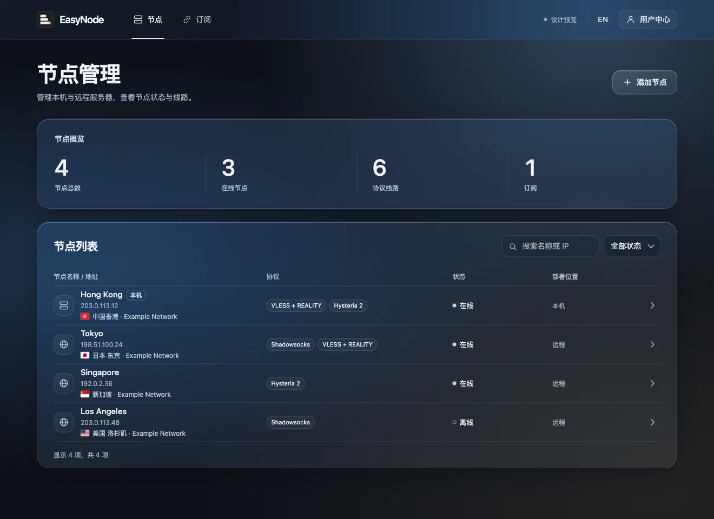

节点列表
3 台在线HK
Hong Kong203.0.113.12
VLESS + REALITYJP
Tokyo198.51.100.24
ShadowsocksSG
Singapore192.0.2.36
Hysteria 2订阅列表
1 条订阅Asia Pacific3 条线路
https://demo.invalid/s/example
Shadowrocket 与 Clash Verge Rev 订阅示例。
一条命令安装
在有公网 IPv4 的 VPS 上，以 root 身份在 Bash 中运行。放行 TCP 80、443 和所选协议端口。
bash <(curl -fsSL https://raw.githubusercontent.com/sl2782087/easynodedeck/v0.6.0/install.sh)Debian 12 / 13 · Ubuntu LTS 22.04 / 24.04 / 26.04 · Rocky Linux 8 / 9 / 10 · CentOS Stream 9 / 10
从一台 VPS 到第一条订阅
登录自己的面板
公网 IP 或域名都能用。安装器会配置 HTTPS，并在终端显示访问地址。账密留空即可自动生成。
选好节点和协议
先用本机，也可以填入另一台 VPS 的 SSH 信息。核对指纹、勾选协议后，面板会自动安装配置。
导入一次，按需刷新
在 Clash Verge Rev 粘贴链接，或用 Shadowrocket 扫码。以后增减线路，在客户端刷新原订阅即可。
面板实览
查看节点是否在线、流量从哪里出去，以及每台机器支持的协议。下图使用模拟数据。
